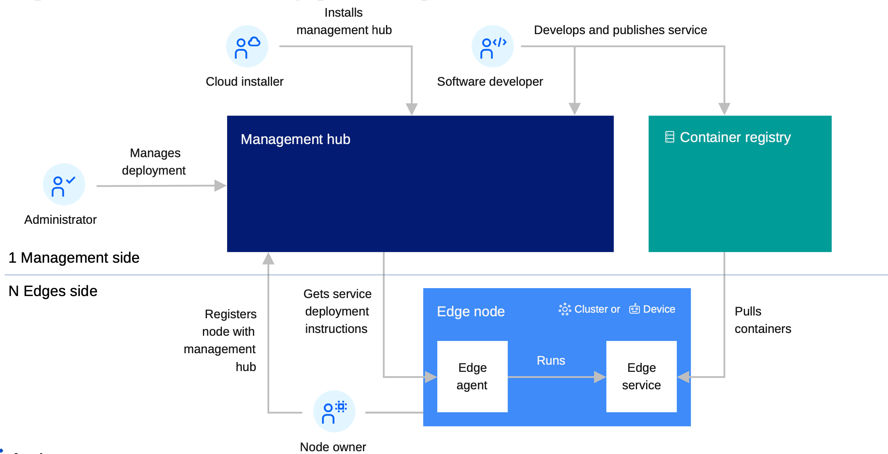
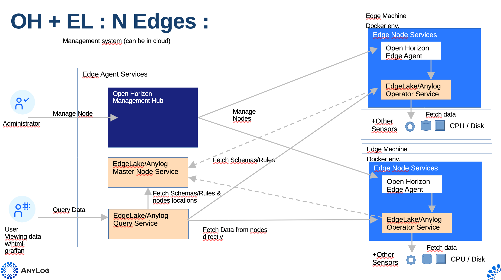
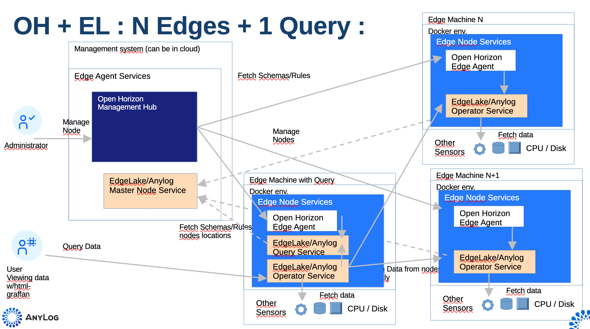
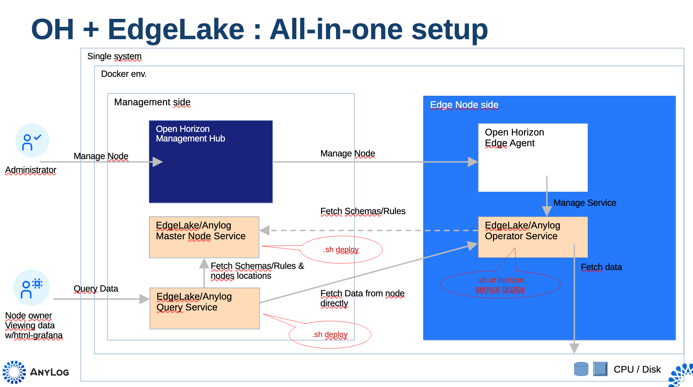

AnyLog Service for OpenHorizon
AnyLog is a decentralized network to manage IoT/Edge data. Nodes are compute instances that execute the AnyLog software and are part of a nodes network.
The AnyLog network uses one Master node (holds all network metadata), as many Operator nodes as required (where data is stored), and at least one Query node (where queries are made — nodes can be dual-role Query+Operator). The Query node knows from the metadata which Operators to contact and queries them peer-to-peer.
Note: The Master node can also be replaced by a Blockchain service & contract — not covered here.
Adding AnyLog to Open Horizon deployments extends OH value by: - Simple collection of node health data - Extending queried data to other sensors useful to the user (e.g. machine RPMs)
Architecture
In a typical Open Horizon deployment here are the main elements:

The simplest pattern for adding AnyLog is to co-locate the Master and Query nodes with the OH Management Hub:

A more practical approach puts the Query node(s) elsewhere, avoiding moving data to the Management Hub (peer-to-peer collection). Multiple Query nodes are supported:

For demonstrating and testing on a single physical system:

Repository Structure
anylog-service/
├── Makefile
├── deploy.sh ← docker lifecycle engine (can be run standalone, without make)
├── service.definition.json ← base template (never modified directly)
├── service.policy.json ← base template
├── node.policy.json ← base template
└── docker-makefiles/
├── env2json.sh ← generates per-instance JSON policy files
├── env2json.py ← Python equivalent of env2json.sh
├── prep_configs.sh
├── build_docker_compose.sh
├── clean_configs.sh
├── docker-compose-files/
│ └── <ANYLOG_TYPE>-docker-compose.yaml
└── <ANYLOG_TYPE>/ ← one directory per node instance
├── node_configs.env ← user-edited configuration
├── service.definition.json ← generated by prep-service
├── service.policy.json ← generated by prep-service
└── node.policy.json ← generated by prep-service
Each <ANYLOG_TYPE> directory is self-contained. Multiple instances (e.g. anylog-generic, anylog-operator,
anylog-master) can coexist on the same machine without conflicts — every prep-service run writes its JSON
files into its own subdirectory, using the NODE_NAME from that instance's .env as the service identity.
Prerequisites
| Tool | Required for |
|---|---|
docker or podman |
All container operations |
docker compose / docker-compose |
Docker compose targets (when using Docker) |
podman-compose |
Required when using podman (install: pip3 install podman-compose) |
jq |
prep-service (JSON policy generation) |
hzn (Open Horizon CLI) |
All publish-*, agent-run, deploy-check targets |
The Makefile and deploy.sh auto-detect docker vs podman and the appropriate compose tool.
When using podman, podman-compose is mandatory and the script will fail if it's not installed.
hzn is optional — all Docker compose targets work without it.
Configuration
Each node type has its own directory under docker-makefiles/ containing a node_configs.env file.
The key variables read at make-time are:
Variable in .env |
Purpose |
|---|---|
NODE_NAME |
Sets the container name and OpenHorizon service identity |
IMAGE |
Docker image repo (e.g. anylogco/anylog-network) |
All other variables are passed through to the container at runtime.
Makefile variables
| Variable | Default | Description |
|---|---|---|
ANYLOG_TYPE |
anylog-generic |
Subdirectory name under docker-makefiles/. Short forms (generic, master, operator, query, publisher, standalone-operator, standalone-publisher) are auto-resolved to anylog-<type> |
TAG |
2.0.2606 |
Docker image tag |
IMAGE |
anylogco/anylog-network |
Docker image repo |
IS_MANUAL |
false |
Use docker run instead of docker compose for the docker-lifecycle targets |
LICENSE_KEY |
(none) | AnyLog license key. If not set, license-check (run automatically by up and prep-service) prompts for it and writes it into node_configs.env |
PROMPT_LICENSE |
true |
Whether to prompt for a license key when one isn't already saved |
TEST_CONN |
auto-resolved from node_configs.env |
REST endpoint (ip:port) used by test-status/test-node/test-network/check-processes |
HZN_ORG_ID |
myorg |
OpenHorizon organisation ID |
HZN_LISTEN_IP |
127.0.0.1 |
OpenHorizon listen IP |
SERVICE_VERSION |
same as TAG |
OH service version |
HZN_EXCHANGE_USER_AUTH |
(required for publish) | OH exchange credentials |
| SERVICE_VERSION | 1.0.0 | Service version using semantic versioning format (e.g., "1", "1.0", "1.25.03"). Used for version tracking across deployments. Non-semantic values like "latest" or "dev" are rejected. |
| LICENSE_KEY | (none) | Required for publish, register (agent-run), and start operations. AnyLog license key for deployment authorization. If not set, license-check (run automatically by up and prep-service) prompts for it and writes it into node_configs.env. Set via environment variable, --license-key flag, or interactively when prompted. |
Volumes
Each AnyLog node uses three named Docker volumes, scoped to the NODE_NAME set in node_configs.env:
| Volume | Mount path | Purpose |
|---|---|---|
${NODE_NAME}-anylog |
/app/AnyLog-Network/anylog |
AnyLog runtime state — active processes, in-flight data, and internal configuration generated at startup |
${NODE_NAME}-blockchain |
/app/AnyLog-Network/blockchain |
Local copy of the blockchain/metadata ledger, synced from the Master node on a schedule |
${NODE_NAME}-data |
/app/AnyLog-Network/data |
Persistent operator data — the actual time-series records stored by the node |
Deployment scripts: Open Horizon vs Docker Compose
With plain Docker Compose you can bind-mount a local clone of the AnyLog deployment-scripts repo directly into the container. Open Horizon does not support this pattern cleanly for two reasons:
- Container lifecycle is managed by the Horizon agent — you don't control when mounts occur relative to any init steps, so a bind-mount to a locally cloned repo can race or fail silently.
- Services start independently — an init container approach (e.g. BusyBox cloning the repo before the main container starts) is unreliable because the Horizon agent may start the main service before the repo clone finishes, or the cloned path may be hidden once the volume mount lands.
Recommended approach: fork https://github.com/AnyLog-co/deployment-scripts
and point AnyLog at your fork via node_configs.env:
# Github repo to use for configuring / deploying node
DEPLOYMENTS_REPO="https://github.com/<your-org>/deployment-scripts"
# Branch associated with git repo
DEPLOYMENTS_BRANCH="main"
Environment Variables
SERVICE_VERSION
The SERVICE_VERSION environment variable tracks the version of the AnyLog service being deployed using semantic versioning format.
Format: Semantic versioning (e.g., "1", "1.0", "1.25.03")
Default: If not explicitly set, the system uses "1.0.0" as the default value.
Validation: The deployment script validates that SERVICE_VERSION follows semantic versioning format. Non-semantic values like "latest", "dev", or "main" are rejected with a clear error message.
Usage Examples:
# Explicit version for production
export SERVICE_VERSION=1.2.5
make up ANYLOG_TYPE=anylog-operator
# Using default (1.0.0)
make up ANYLOG_TYPE=anylog-operator
# Invalid - will be rejected
export SERVICE_VERSION=latest # ❌ Not semantic versioning
make up ANYLOG_TYPE=anylog-operator
Best Practices: - Use explicit versions for production deployments - Follow semantic versioning conventions (MAJOR.MINOR.PATCH) - Update SERVICE_VERSION when deploying new releases - Document version changes in your deployment logs
LICENSE_KEY
The LICENSE_KEY environment variable is required for publish, register (agent-run), and start operations. It provides deployment authorization for AnyLog services.
Requirement: Mandatory for make publish, make agent-run, and make up operations.
Validation: The Makefile validates that LICENSE_KEY is set before executing publish, register, or start targets. Missing LICENSE_KEY results in a clear error message directing users to set the variable or run make license-check.
Automatic Handling: If LICENSE_KEY is not set in node_configs.env, the license-check target (automatically run by up and prep-service) prompts for it interactively and writes it back to the configuration file for future use.
Usage Examples:
# Set via environment variable
export LICENSE_KEY="your-license-key-here"
make up ANYLOG_TYPE=anylog-operator
# Set via command line
make up ANYLOG_TYPE=anylog-operator LICENSE_KEY="your-license-key-here"
# Interactive prompt (first run)
make up ANYLOG_TYPE=anylog-operator
# Prompts: "License Key: "
# Saves to node_configs.env for future runs
# Explicit license check
make license-check ANYLOG_TYPE=anylog-operator
Testing and Validation
Pre-Deployment Validation
Before deploying AnyLog services, validate your configuration to ensure SERVICE_VERSION and LICENSE_KEY are properly set:
# Check all variable values and validation status
make check-vars ANYLOG_TYPE=anylog-operator
# Output includes validation status:
# SERVICE_VERSION: ✓ 1.2.5
# LICENSE_KEY: ✓ Set
SERVICE_VERSION Validation
The deployment script automatically validates SERVICE_VERSION format:
# Valid semantic versions (will succeed)
export SERVICE_VERSION=1
make up ANYLOG_TYPE=anylog-operator
export SERVICE_VERSION=1.0
make up ANYLOG_TYPE=anylog-operator
export SERVICE_VERSION=1.25.03
make up ANYLOG_TYPE=anylog-operator
# Invalid versions (will fail with clear error)
export SERVICE_VERSION=latest # ❌ Not semantic versioning
make up ANYLOG_TYPE=anylog-operator
# ERROR: Invalid SERVICE_VERSION format: 'latest'. Must be semantic version...
export SERVICE_VERSION=dev # ❌ Not semantic versioning
make up ANYLOG_TYPE=anylog-operator
# ERROR: Invalid SERVICE_VERSION format: 'dev'. Must be semantic version...
LICENSE_KEY Validation
Makefile targets that require LICENSE_KEY will fail with clear error messages if it's not set:
# Missing LICENSE_KEY for publish
make publish ANYLOG_TYPE=anylog-operator
# ERROR: LICENSE_KEY is required for publish operation...
# Missing LICENSE_KEY for agent registration
make agent-run ANYLOG_TYPE=anylog-operator
# ERROR: LICENSE_KEY is required for start operation...
# Valid with LICENSE_KEY set
export LICENSE_KEY="your-license-key"
make publish ANYLOG_TYPE=anylog-operator
# ✓ Success
Configuration File Validation
Use the test-anylog-service skill to validate configuration files before deployment:
# Validate all configuration files
bob "test the anylog service configuration"
# The skill checks:
# - SERVICE_VERSION is semantic version format
# - LICENSE_KEY is present (not placeholder)
# - Environment files have sane defaults
# - Provides clear error messages and correction guidance
Runtime Testing
After deployment, verify the service is running correctly:
# Full test suite (status + node + network)
make full-test ANYLOG_TYPE=anylog-operator
# Individual tests
make test-status ANYLOG_TYPE=anylog-operator # Check node status
make test-node ANYLOG_TYPE=anylog-operator # Test node configuration
make test-network ANYLOG_TYPE=anylog-operator # Test network connectivity
make check-processes ANYLOG_TYPE=anylog-operator # List active/inactive services
Note on Operator Testing: An operator node can be deployed and tested locally to verify it starts correctly and loads configuration. However, full functionality testing requires a master node to be available for blockchain synchronization. Without a master node connection, the operator will run but show connection errors in logs when attempting to sync metadata. For complete network testing, deploy both master and operator nodes.
Troubleshooting
SERVICE_VERSION Issues:
- Symptom: Deployment fails with "Invalid SERVICE_VERSION format"
- Solution: Ensure SERVICE_VERSION follows semantic versioning (e.g., "1", "1.0", "1.25.03")
- Check: Run make check-vars to see current value
LICENSE_KEY Issues:
- Symptom: Publish/register/start fails with "LICENSE_KEY is required"
- Solution: Set LICENSE_KEY via environment variable or run make license-check
- Check: Run make check-vars to verify LICENSE_KEY is set
Default Value Behavior: - If SERVICE_VERSION is not set, deployment uses "1.0.0" automatically - Check deployment logs for "INFO: Using SERVICE_VERSION: 1.0.0" message
Best Practices:
- Store LICENSE_KEY securely (use environment variables or secrets management)
- Never commit LICENSE_KEY values to version control
- Use make license-check to validate and save license keys
- Set PROMPT_LICENSE=false in CI/CD environments to fail fast instead of prompting
Security Notes:
- LICENSE_KEY is written to node_configs.env after acceptance
- Ensure node_configs.env files are excluded from version control (via .gitignore)
- Use secure methods to distribute license keys to deployment environments
The node pulls the repo at startup, so any configuration changes are applied on the next container restart without re-publishing the OH service.
Usage
Docker Compose
LICENSE_KEY doesn't need to be set manually — if it's missing from node_configs.env, make up prompts for
it (interactively, via /dev/tty) and writes it back into the file so future runs skip the prompt. Pass
--license-key non-interactively (e.g. in CI) via LICENSE_KEY=... make up ..., or set PROMPT_LICENSE=false
to fail fast instead of prompting.
# Pull image from Docker Hub
make pull ANYLOG_TYPE=anylog-generic
# Preview — generate docker-compose.yaml without starting
make dry-run ANYLOG_TYPE=anylog-generic
# Start (prompts for LICENSE_KEY on first run if not already set)
make up ANYLOG_TYPE=anylog-generic TAG=latest
# Stop
make down ANYLOG_TYPE=anylog-generic
# Stop and remove volumes
make clean ANYLOG_TYPE=anylog-generic
# Stop, remove volumes and image
make clean-all ANYLOG_TYPE=anylog-generic
# Logs
make logs ANYLOG_TYPE=anylog-generic
make logs-f ANYLOG_TYPE=anylog-generic # follow
# Attach to running container (interactive AnyLog CLI)
make attach ANYLOG_TYPE=anylog-generic
# Open bash shell in container (anylog user, or root)
make exec ANYLOG_TYPE=anylog-generic
make exec-root ANYLOG_TYPE=anylog-generic
Use IS_MANUAL=true to fall back to a plain docker run instead of docker compose (useful when a compose
file isn't wanted, e.g. constrained environments):
make up ANYLOG_TYPE=anylog-generic IS_MANUAL=true
Testing
# Run get-status + test-node + test-network in sequence
make full-test ANYLOG_TYPE=anylog-generic
make test-status ANYLOG_TYPE=anylog-generic # `get status where format=json`
make test-node ANYLOG_TYPE=anylog-generic # `test node`
make test-network ANYLOG_TYPE=anylog-generic # `test network`
make check-processes ANYLOG_TYPE=anylog-generic # `get processes`
TEST_CONN is auto-resolved from the node's ANYLOG_REST_PORT in node_configs.env (falling back to
127.0.0.1:<port>) — override it directly if testing against a remote node:
make full-test TEST_CONN=192.168.1.10:32149
OpenHorizon
# Set service version
export SERVICE_VERSION=1.1
# Generate service.definition.json, service.policy.json, service.deployment.json and node.policy.json
# into docker-makefiles/<ANYLOG_TYPE>/
# (also resolves LICENSE_KEY first — prompts and saves it into node_configs.env if missing)
make prep-service ANYLOG_TYPE=anylog-generic TAG=latest
# Publish service + policies, then register the agent (full workflow)
make full-deploy ANYLOG_TYPE=anylog-generic TAG=latest
# Publish services and policies only (no agent registration)
make publish ANYLOG_TYPE=anylog-generic
# Register agent against already-published policies
make deploy ANYLOG_TYPE=anylog-generic
# Start agent only (after policies are already published)
make agent-run ANYLOG_TYPE=anylog-generic
# Unregister agent, remove all policies/service, and wipe image+volumes
make hzn-clean-all ANYLOG_TYPE=anylog-generic
# Check agreement list
make hzn-agreement-list
# View logs for container running under Open Horizon
make hzn-logs ANYLOG_TYPE=anylog-generic
# Validate deployment against all policy files
make deploy-check ANYLOG_TYPE=anylog-generic
If you only need to resolve/update the license key without generating anything else:
make license-check ANYLOG_TYPE=anylog-generic
Granular teardown targets (useful when only part of a deployment needs to be undone):
make unregister-agent # unregister agent from OpenHorizon
make remove-service ANYLOG_TYPE=anylog-generic # remove service from hzn exchange
make remove-service-policy ANYLOG_TYPE=anylog-generic # remove service policy
make remove-deployment-policy ANYLOG_TYPE=anylog-generic # remove deployment policy
Diagnostics for a registered node:
make hzn-status # agreement list + event log + service log, in sequence
make hzn-agreement-list # check agreement list
make hzn-event-list # list event logs
make hzn-logs ANYLOG_TYPE=anylog-generic # view service logs
prep-build is a temporary bridge target — AnyLog's current release tags aren't in the #.#.#### format
Open Horizon expects, so this pulls the image under its normal TAG, retags it to a valid OH version string,
and pushes that instead:
make prep-build ANYLOG_TYPE=anylog-generic TAG=pre-develop
# then: make full-deploy ANYLOG_TYPE=anylog-generic TAG=<printed OH_VERSION>
Granular publish targets (useful when iterating on a single policy):
make publish-service ANYLOG_TYPE=anylog-generic # publish service definition
make publish-service-policy ANYLOG_TYPE=anylog-generic # publish service policy
make publish-deployment-policy ANYLOG_TYPE=anylog-generic # publish deployment policy
make publish-version ANYLOG_TYPE=anylog-generic # update version only
Multiple instances on the same machine — each with its own identity and policy files:
make prep-service ANYLOG_TYPE=anylog-master TAG=latest
make prep-service ANYLOG_TYPE=anylog-operator TAG=pre-develop
make prep-service ANYLOG_TYPE=anylog-query TAG=latest
Update the policy on an already-registered Open Horizon node:
hzn unregister
hzn register -n nodename -f docker-makefiles/<ANYLOG_TYPE>/node.policy.json
Diagnostics
# Show all resolved variable values (docker + Open Horizon)
make check-vars ANYLOG_TYPE=anylog-generic
# Attach to running container (interactive AnyLog CLI)
make attach ANYLOG_TYPE=anylog-generic
# Open bash shell in container
make exec ANYLOG_TYPE=anylog-generic
All docker-lifecycle targets can also be run without make, directly via deploy.sh:
bash deploy.sh up --type operator --tag latest
bash deploy.sh check-vars --type query
bash deploy.sh help